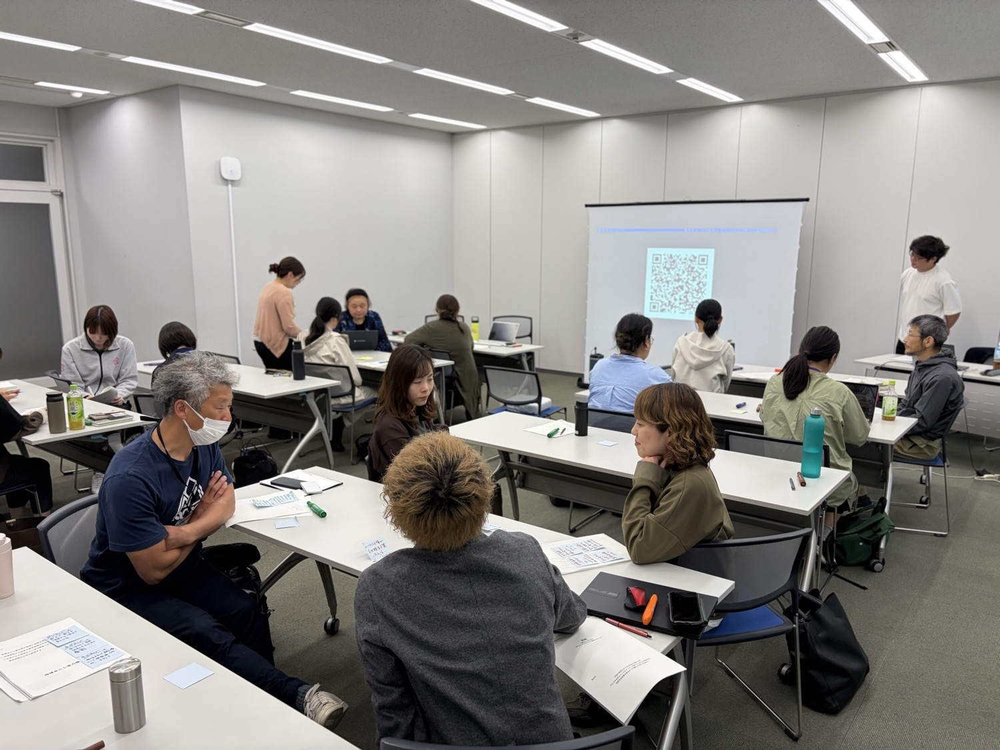
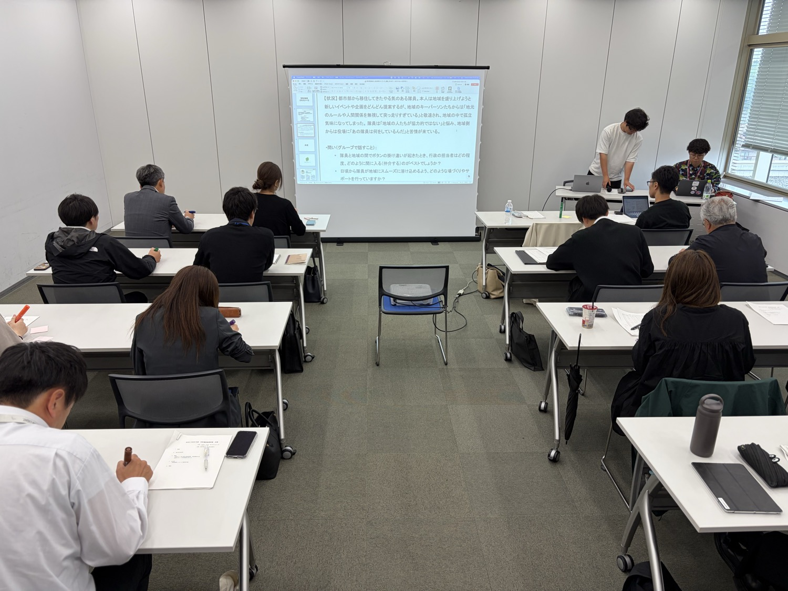

記事・お知らせ
研修や交流会のレポート、ネットワークからのお知らせをお届けします。
-

活動レポート
まず、地域の人の話を聴くことから。協力隊初任者研修で講義と対談を担当しました
協力隊初任者研修で、ネットワークメンバーが講義と対談を担当。自分の立場の確かめ方、地域との関係づくり、グループでの意見交換の様子を紹介します。
記事を読む
-

活動レポート
何のために隊員を募集するのか。市町職員基礎研修で、募集前から任期後までを考えました
協力隊を担当する市町職員の基礎研修を紹介。募集の目的の共有、契約の形、応募者との接点、隊員と地域がすれ違ったときの対応を考えました。
記事を読む
-

活動レポート
協力隊の経験を、地域で続ける仕事へ。塩谷町・矢板市で先輩隊員を訪ねました
塩谷町・矢板市で、飲食、農業、ものづくり、DX支援に取り組む協力隊経験者を訪問。現役時代の活動と現在の仕事を紹介します。
記事を読む